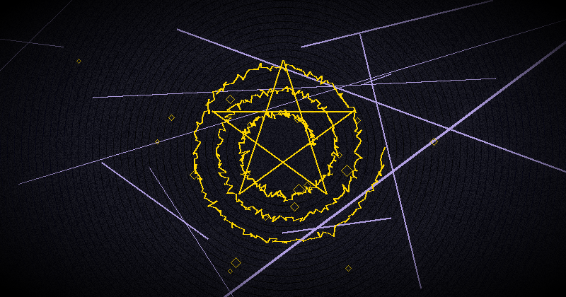

What is Magick? How Spells Work & Why Chaos Magick is Different
If you have landed on this page, you have probably searched for "what is magick," "how do spells work," or "what is magic with a k." You are in the right place. This guide is the definitive beginner's answer to every foundational question about magick — the real kind, not the stage tricks.
Magick (with a 'k') is one of the most misunderstood words in the English language. For most people, it conjures images of wizards, wands, and rabbits pulled from hats. For practitioners, it is something far more profound: a systematic method for causing change in accordance with will. This article will explain what magick actually is, how spells work, and why the modern tradition of chaos magick has revolutionized occult practice for the 21st century.
By the end of this guide, you will understand the difference between magic and magick, the four components of any spell, how to cast your first chaos magick spell, and where to go next. Let us begin at the very beginning.
What is Magick? (With a 'K')
The most widely accepted definition of magick comes from Aleister Crowley, the controversial English occultist who reshaped Western esotericism in the early 20th century. In his 1929 book Magick in Theory and Practice, Crowley defined magick as:
"The Science and Art of causing Change to occur in conformity with Will."
This definition is deliberately broad. Under it, any act of focused will that produces a change in reality is an act of magick. Making a phone call, writing a book, starting a business — all are, technically, magical acts. The difference is that occult magick uses symbolic, psychological, and energetic techniques that are not yet explained by conventional science.
Crowley added the 'k' to distinguish his practice from stage magic. The word "magick" (with the archaic 'k') signals that we are talking about the Western esoteric tradition, not entertainment. He also, as a numerological flourish, noted that the word now had six letters — a number with deep occult significance.
What Magick Is Not
Before we go further, let us clear up some common misconceptions:
- Magick is not waving a wand and saying Latin phrases. Wands and words are tools, not the source of power. The source is you.
- Magick is not supernatural. It operates according to natural laws — we just do not fully understand those laws yet. Crowley insisted magick was a science, not a superstition.
- Magick is not a shortcut to skip hard work. Most spells work by aligning your subconscious, your environment, and your opportunities. You still need to take action in the physical world.
- Magick is not evil. It is a neutral technology. It can be used for beneficial or harmful purposes, just like fire, money, or social media. The ethics depend on the practitioner.
Why the 'K' Matters
The distinction between "magic" (stage illusions, card tricks, entertainment) and "magick" (occult practice, will-based transformation) is crucial. When you search for "what is magic with a k," you are looking for the esoteric tradition — the lineage that runs through Egyptian mystery schools, Hermetic philosophy, the Renaissance magi, the Golden Dawn, and into modern chaos magick. The 'k' is a signal that you are entering a serious field of study with centuries of theory, practice, and results.
Magic vs. Magick: The Difference
| Magic (Entertainment) | Magick (Occult) |
|---|---|
| Designed to deceive the audience | Designed to produce real change |
| Performed by skilled illusionists | Practiced by anyone with focused will |
| Requires props and stagecraft | Requires only consciousness |
| Acknowledged as trickery | Believed to be a real technology of mind |
| Entertainment value only | Practical, transformative results |
One is a performance art. The other is a discipline of the will. They share a name only because stage magicians historically appropriated the language of occultism to make their shows more mysterious. This guide is about the second kind — the real kind.
A Brief History of Western Magick
To understand what magick is today, you need to know where it came from. The Western magical tradition has evolved continuously for over two thousand years, but its modern form crystallized through four major movements.
Hermeticism and the Roots (1st-15th Century)
Western magick traces its intellectual roots to the Hermetic Corpus — a collection of texts attributed to Hermes Trismegistus, a syncretic figure combining the Greek god Hermes and the Egyptian god Thoth. Hermetic philosophy teaches that the universe is a unified living being ("as above, so below") and that the human mind can access and influence its deeper structures through symbols, correspondences, and ritual. This principle — the correspondence between macrocosm and microcosm — remains the theoretical foundation of nearly all Western magick.
The Hermetic Order of the Golden Dawn (1888-1903)
The Golden Dawn was the most influential magical organization in Western history. Founded in London, it synthesized Hermeticism, Kabbalah, Tarot, Enochian magic, alchemy, and astrology into a single, graded initiatory system. Members included the poet W.B. Yeats, the actress Florence Farr, and — most significantly for our story — Aleister Crowley. The Golden Dawn codified the rituals, symbols, and grades that most ceremonial magicians still use today. Its downfall came from internal power struggles, but its intellectual legacy is immeasurable.
Aleister Crowley and the Standardization of Magick (1904-1947)
Crowley broke from the Golden Dawn and created his own system based on The Book of the Law (1904), which he claimed was dictated by a praeterhuman entity named Aiwass. His central ethical principle was "Do what thou wilt shall be the whole of the Law" — not as a license for hedonism, but as a call to discover and execute one's true Will, the fundamental purpose of one's existence. Crowley systematized magick into a rigorous discipline covering yoga, ritual, astrology, alchemy, divination, and sexual magic. His definition of magick — "the Science and Art of causing Change to occur in conformity with Will" — remains the standard. He also introduced the spelling "magick" to distinguish his work from stage illusion.
Austin Osman Spare and the Psychological Turn (1886-1956)
Spare was a British artist and occultist who worked as a young man in Crowley's orbit but developed a radically different system. Where Crowley emphasized elaborate rituals and high ceremonial, Spare stripped magick to its psychological essence. His key insight was that the conscious critical faculty — the rational, analytical part of the mind — blocks magical change. To make magic work, you must bypass the critic and speak directly to the subconscious. Spare invented the modern sigil technique and the concept of gnosis to achieve this bypass. His 1913 book The Book of Pleasure (Self-Love): The Psychology of Ecstasy laid the groundwork for everything chaos magick would later build on.
The Birth of Chaos Magick: Carroll and Hine (1978-present)
In the late 1970s, Peter J. Carroll synthesized Spare's insights, information theory, and Buddhist philosophy into a new system: chaos magick. His books Liber Null and Psychonaut (1978) defined the core principles: belief as a tool, gnosis as the engine of magic, and personal results as the only valid measure of success. Carroll co-founded the Illuminates of Thanateros (IOT), the first organized chaos magick order.
In the 1990s, Phil Hine democratized chaos magick with Condensed Chaos (1995), making it accessible to anyone, anywhere, without initiation or membership. Hine emphasized play, creativity, and the integration of chaos magick with postmodern culture, anarchism, and technology. His work brought chaos magick to the internet age, where it has thrived ever since.
This lineage — Hermeticism → Golden Dawn → Crowley → Spare → Chaos Magick — is the direct ancestor of everything you will read on this site.
How Spells Actually Work: Three Models
There is no single universally accepted explanation for how spells work. Different practitioners hold different models, and many find that all three models are simultaneously true at different levels. Here are the three most common explanatory frameworks.
1. The Psychological Model
The psychological model is the most scientifically respectable explanation, and the one most favored by chaos magicians. In this view, spells work by reprogramming the subconscious mind.
Your subconscious governs most of your behavior, perception, and outcomes. It filters reality according to your deeply held beliefs. If your subconscious believes you are unlucky, you will consistently overlook opportunities and make choices that confirm that belief. A spell is a technology for implanting new instructions into the subconscious, bypassing the critical filter of the conscious mind.
When you create a sigil, charge it in gnosis, and release it, you are essentially installing a new program in your mental operating system. The sigil is the installation file. Gnosis is the admin password. Once installed, the subconscious works quietly in the background, altering your perception, behavior, and decisions to align with the new instruction. This is why releasing and forgetting is crucial: obsessing over the outcome keeps the instruction in conscious awareness, where the critic can block it.
The psychological model does not require anything supernatural. It is compatible with neuroscience, cognitive psychology, and behavioral science. Many practitioners use this model exclusively and get consistent results.
2. The Energetic Model
The energetic model posits that reality has a subtle energy substrate that responds to directed will and intention. This goes by many names: qi (or chi) in Chinese thought, prana in Indian traditions, odic force in Western occultism, the aether in Hermetic philosophy. In this view, a spell is a directed pulse of energy that propagates through this substrate and produces physical-world effects.
This model is more familiar to those who have studied Reiki, qigong, or other energy-healing traditions. The magical practitioner learns to perceive, accumulate, and direct this subtle energy through visualization, breath control, and focused will. Spells work because the energetic impulse travels through the substrate and influences events, people, and circumstances at a distance — not unlike how a radio wave travels through the electromagnetic field.
Skeptics point out that no instrument has ever conclusively detected this energy. Adherents respond that the energy is subjective and experiential — it can only be perceived by trained consciousness, not by machines. The debate remains unresolved, but the reported results are consistent across cultures and millennia.
3. The Spiritual Model
The spiritual model holds that spells work by communicating with non-physical intelligences: gods, demons, angels, spirits, ancestors, or other entities. In this view, the magician is not the source of the power but a mediator who negotiates with autonomous beings. This is the oldest model, found in virtually every pre-modern culture.
Chaos magicians treat this model with characteristic pragmatism. Whether the entities are objectively real or are thought-forms constructed by the practitioner's mind matters less than whether the technique produces results. Many chaos magicians work with Goetic spirits, Norse gods, or personal servitors, shifting between paradigms as needed.
The spiritual model has a strong psychological component: even if spirits are autonomous, the practitioner's belief, intention, and state of consciousness determine the quality of the interaction. The "entity" may be a real external intelligence, a sub-personality of the practitioner's own psyche, or something in between — chaos magick does not require you to decide, as long as the spell works.
Which Model is Correct?
All three models produce results for their adherents. The chaos magick perspective is that the map is not the territory. The model you use is a lens, not a truth claim. Pick the model that resonates with you, use it until it stops serving you, then switch freely. The models are tools, not dogmas.
The 4 Components of Any Spell
Regardless of the model you prefer, every spell has the same four structural components. Understanding these will allow you to analyze any magical operation, design your own, and troubleshoot when things do not work.
1. Intent
Intent is the desired outcome — the change you want to cause. It is the raw material of the spell. Without clear intent, a spell is directionless energy.
Effective intent has several qualities:
- Specific: "I want more money" is vague. "I receive a $5,000 bonus by December 31st" is specific.
- Present tense: Phrase it as if it has already happened. "I now have..." not "I will have..." The subconscious does not understand future tense.
- Positive: State what you want, not what you do not want. The subconscious cannot process negatives well. "I am free of anxiety" becomes "I am calm and confident."
- Aligned with your true Will: A spell for something you do not genuinely want (or that conflicts with your deeper values) will fail or produce unwanted side effects.
2. Symbol
The symbol is the encoded representation of your intent. It translates the rational statement (intent) into a form that bypasses the analytical mind and speaks directly to the subconscious or the energetic substrate.
Symbols in magick include:
- Sigils: Abstract symbols created by condensing a written statement of intent
- Seals: Traditional symbolic signatures of spirits or forces
- Runes: Norse or Germanic alphabetic symbols with established meanings
- Planetary squares: Numeric grids associated with specific celestial forces
- Talismans: Physical objects inscribed with symbolic patterns
- Digital glyphs: Cryptographic sigils generated by algorithms
The symbol does not need to be visually impressive. Its only requirement is that it encodes your intent in a form your subconscious can read. Chaos magick, following Spare, emphasizes that simpler symbols are often more effective because they carry less mental noise.
3. Gnosis
Gnosis is the altered state of consciousness in which the spell is activated. It is the engine of magic — the power source. Without gnosis, you are merely thinking about your intent, not imprinting it into the deeper layers of your psyche or reality.
Gnosis has two primary pathways:
- Inhibitory gnosis: Achieved by reducing sensory input and mental activity to near-zero. Deep meditation, sensory deprivation, fixed-gaze trance, and breathwork all lead here. The mind becomes quiet through absence.
- Excitatory gnosis: Achieved by overwhelming the mind with intense input until the analytical faculty shuts down. Drumming, dancing, chanting, orgasm, extreme physical exertion, and intense emotion all lead here. The mind becomes quiet through overload.
Both paths lead to the same destination: a mental state where the critical faculty is offline and the subconscious is open to direct impression. This is the state in which you charge your sigil, speak your incantation, or direct your energy.
4. Release
Release is the letting go — the moment you surrender the spell to the universe, your subconscious, or the spirits. It is the most counterintuitive and most essential component.
After charging the symbol in gnosis, you must stop thinking about the outcome. Obsession blocks manifestation. When you constantly check "Did it work? Has it worked yet?" you keep the intent locked in your conscious mind, where the critical faculty can neutralize it.
Release is often accompanied by a physical act: burning the sigil, burying it, hiding it, or destroying it. This physical closure signals to the subconscious that the operation is complete. The matter is now in its hands.
Fire and forget. This is the magician's discipline.
Why Chaos Magick is Different
Chaos magick is not just another occult tradition. It represents a fundamental break from everything that came before. Here is what makes it different.
No Dogma
Traditional occult systems — the Golden Dawn, Thelema, Wicca, Ceremonial Magic — all demand that you accept certain beliefs, practice certain rituals, and follow certain rules. Chaos magick rejects this completely. There are no required beliefs, no mandatory rituals, no sacred texts that must be accepted on faith. The only "rule" is: do what works.
This makes chaos magick uniquely suited to the modern, skeptical, scientific mindset. You are not asked to believe anything. You are asked to test techniques and judge by results.
Results-Based
In traditional magic, the measure of a successful ritual is whether you followed the instructions correctly. In chaos magick, the measure is whether the outcome manifested. If a spell produces results, it is good magic regardless of whether you used the "correct" planetary hour, the right color of candle, or the proper angelic name.
This radical pragmatism means chaos magick evolves rapidly. Techniques that do not produce results are discarded. New techniques, borrowed from psychology, science, or other traditions, are incorporated freely. The body of chaos magick practice is constantly growing and changing.
Belief as a Tool
This is the single most important concept in chaos magick. In everyday life, we treat our beliefs as fixed truths about how reality works. In chaos magick, belief is a tool you pick up and put down according to your purpose.
Need to invoke Odin for wisdom? You temporarily adopt the Norse paradigm as if it were absolutely real. The ritual will be more effective if you believe, in that moment, that Odin exists and hears you. Afterward, you return to your default worldview. You have not "converted" to Norse paganism. You used a paradigm as a tool.
This is not cynicism. It is a trained skill of consciousness. The chaos magician learns to shift between paradigms at will, like an actor inhabiting different roles. Each paradigm is a lens that reveals certain truths and conceals others. You choose the lens that best serves your current purpose.
Carroll distilled this in Liber Null: "Belief is a tool for achieving results, not a statement of ultimate truth."
Integration with Modern Life
Chaos magick does not require you to withdraw from the world. It does not demand robes, altars, or membership in secret orders. You can practice it while living a normal life, holding a normal job, and using normal technology. In fact, chaos magick embraces technology as a magical tool — an approach sometimes called cybermancy or digital sorcery.
Digital Magick Tools for the Modern Practitioner
Cha0smagick Labs builds apps that serve as digital magical instruments. Each is designed to be used as part of your practice — offline, private, and focused on results.
- Chaos Sigil Generator — Create cryptographic sigils using 6 ancient alphabets and planetary kameas. Built-in flash ritual for gnosis charging.
- Norse Rune Oracle — Full Elder Futhark divination for timing and feedback on your magical work.
- I Ching Oracle — Classical Chinese divination adapted for chaos magick paradigms.
- Unofficial Rider-Waite Tarot — Complete 78-card deck for symbolic training and divination.
- Dream Machine — Dream journal and lucid dreaming trainer. Access natural gnosis states through sleep.
- Arcana Goetia — Complete guide to the 72 spirits of the Lemegeton for spirit paradigm work.
- Lunar Phase Calculator — Track moon phases for timing your operations.
- Psi Gym — ESP training app with Zener cards and statistical tracking to measure your psi abilities.
Step by Step: How to Cast Your First Chaos Magick Spell
Here is a complete, practical spellcasting sequence that requires nothing but a pen, paper, and your focused attention. Follow these steps exactly for your first attempt, then adapt as you gain experience.
Step 1: Define Your Intent
Write a single sentence describing your desired outcome as if it has already happened. Be specific and positive. Example: "I now enjoy a calm and focused mind during my work hours." Spend at least five minutes refining this sentence. The time invested here determines the quality of everything that follows.
Step 2: Create a Sigil
Write your intent sentence. Remove all vowels (A, E, I, O, U) and all repeated letters. You are left with a string of consonants. Example: "I nw nj clm nd fcsd mnd drng m wrk hrs." Now combine these letters into an abstract symbol. Let your hand move freely. Do not judge the result. The sigil is for your subconscious, not for display. A simple, crude sigil often works better than an artistically refined one.
If you prefer a more precise method, the Cha0smagick Labs free online sigil generator can create sigils using cryptographic entropy and ancient alphabets. It handles the encoding step, leaving you to focus on the charging.
Step 3: Enter Gnosis
Choose a gnosis method that works for you. For a first attempt, try fixed-gaze meditation: stare at a single point (a candle flame, a black dot on white paper, or even the sigil itself) for 10-15 minutes without moving your eyes. When your vision blurs, your mind goes blank, and you lose track of time, you are in gnosis. Alternatively, try 20 minutes of slow, deep breathing: inhale for 4 counts, hold for 4, exhale for 8.
Step 4: Charge the Sigil
While maintaining the gnostic state, gaze at your sigil. Visualize it glowing with energy. Project your entire intent and will into it. Feel the desire as already fulfilled. Experience the emotion of having your goal achieved. Pour all your concentrated will into the symbol for 30-60 seconds. Do not hold back — this is the moment of magical transmission.
Step 5: Release and Forget
Immediately after charging, destroy the sigil. Burn it (safely!), tear it into tiny pieces, or flush it down the toilet. The moment it is destroyed, consciously release all attachment to the outcome. Do not dwell on it. Do not check for results. Go about your normal life. The sigil has been fired. Your subconscious is now working on it. Interference will only slow it down.
Record the operation in your grimoire: date, intent, sigil design, gnosis method, and any immediate sensations. Then close the book and do not revisit it for at least a week.
Common Beginner Questions
Is Magick Real?
Yes — in the sense that focused will, applied through symbolic techniques in altered states of consciousness, produces measurable changes in the practitioner's life. Thousands of people across cultures and centuries have reported consistent results. Whether the mechanism is psychological, energetic, or spiritual is an open question, and chaos magick does not require you to settle it. The pragmatic answer is: try it yourself. Cast a simple spell for something small and see what happens. Your personal experience is the only authority that matters.
Is Magick Dangerous?
Magick is as dangerous as any powerful psychological technique. The risks include:
- Obsession: Becoming fixated on magical outcomes at the expense of normal life.
- Escapism: Using magick to avoid practical responsibilities.
- Psychological destabilization: Entering extreme gnostic states without proper grounding, which can cause temporary dissociation or anxiety.
- Ethical consequences: Attempting to manipulate others without their consent, which can backfire and erode relationships.
These risks are manageable with common sense: maintain a normal grounding routine, never use magick to harm, keep a regular job and social life, and if you have a history of serious mental illness, consult a professional before engaging in intense practice.
Do I Need Special Tools?
No. Chaos magick requires nothing external. A pen and paper are sufficient. Many advanced practitioners use nothing at all — they create sigils mentally and charge them through breath control alone. Tools can be useful (candles for focus, incense for atmosphere, digital apps for convenience), but they are enhancements, not requirements. The power is in your will and your gnosis, not in objects.
How Long Until I See Results?
Results vary by the complexity of the intent and your skill level. Simple intentions (improved mood, small opportunities, better focus) may manifest in days. Larger goals (career changes, financial shifts, relationship transformations) can take weeks or months. The key variable is your ability to release attachment. The more you obsess, the longer it takes. If a sigil has not manifested after three months, analyze what went wrong: was the intent unclear? Was the gnosis deep enough? Did you truly release it?
Can I Combine Chaos Magick with Religion?
Absolutely. Many practitioners are Christian, Buddhist, Pagan, or atheist. Chaos magick does not conflict with any belief system because it treats all beliefs as tools. You can be a Christian who practices sigil magic, a Buddhist who uses servitors, or an atheist who gets results through the psychological model alone. The paradigm belongs to you.
The Role of Intention and Will in Magick
At the heart of every magical operation are two interrelated forces: intention and will. Understanding their relationship is crucial.
Intention is the direction — the specific outcome you desire. It answers the question "What do I want?" A clear intention is like setting a destination in a GPS. Without it, you are wandering.
Will is the power — the focused energy that propels the intention toward manifestation. It is not brute force or stubbornness. It is the concentrated, disciplined application of your entire being toward a single point. Crowley distinguished between "lust of result" (anxious attachment to outcome, which weakens magic) and true Will (aligned action without attachment).
The relationship between intention and will can be understood through an analogy: intention is the steering wheel of a car, and will is the engine. Without a steering wheel, the engine takes you nowhere useful. Without an engine, the steering wheel does nothing. Both are necessary.
In chaos magick, will is trained through gnosis practice. Each time you successfully enter a gnostic state and charge a sigil, you strengthen your capacity for focused will. Over time, the will becomes a muscle that can be deployed at will (pun intended) for any purpose.
"The Will is a Bridge across the Abyss of Consciousness. It is the one thing that is both inside and outside." — Austin Osman Spare, The Book of Pleasure
Digital Magick and Cybermancy: Technology as a Magical Tool
One of the most exciting developments in modern chaos magick is the integration of digital technology into magical practice. This emerging field goes by several names: cybermancy, techno-sorcery, digital sorcery, or simply digital magick.
The basic insight is straightforward: if magick is the art of causing change in conformity with will through symbolic means, then digital devices are extraordinarily powerful magical tools. They manipulate symbols at incredible speed, they can generate cryptographic randomness, they can create visual and auditory gnosis triggers, and they are always with us.
Examples of Digital Magick:
- Cryptographic sigils: Using secure random number generators to create sigils that are mathematically unique and unrepeatable — a level of precision impossible by hand.
- Digital altars: Smartphone home screens arranged as magical working spaces, with app icons serving as talismanic symbols.
- Binaural beats and isochronic tones: Audio tracks designed to entrain brainwaves into gnosis-friendly states (theta, delta, or gamma frequencies).
- Flash rituals: Brief, intense visual stimuli (like the flash ritual in the Chaos Sigil Generator app) that trigger a gnostic window through sensory overload.
- Digital dream journals: Recording and analyzing dreams with apps to train lucid dreaming and access the ultimate natural gnosis state.
- Algorithmic divination: Using procedural generation and randomness sources for rune, I Ching, or tarot readings that rival traditional methods.
Chaos magick is uniquely suited to digital integration because it has no tradition to protect. It does not say "real magic must be done by candlelight with a quill pen." It says: if a smartphone app helps you enter gnosis faster, use it. If cryptographic random number generation makes more precise sigils, use it. The tool does not matter. The result matters.
All Cha0smagick Labs apps are designed explicitly as digital magical tools. They are 100% offline (no data leaves your device), ad-free, tracking-free, and available as a one-time purchase. They exist to serve your practice, not to harvest your data.
Where to Go From Here
You now understand what magick is, how spells work, and why chaos magick represents a revolutionary approach to the ancient art. You have the complete theoretical foundation and a practical step-by-step method for casting your first spell.
Here is your next step: do it. Not tomorrow. Not after you have read three more books. Right now. Take a piece of paper. Write an intention. Make a scribble. Stare at a candle. Fire the sigil. Forget about it.
Magick is not a belief system to adopt or a philosophy to debate. It is a practice. The only way to know if it works is to do it. Your first spell will probably feel awkward and uncertain. That is normal. Every skilled magician started exactly where you are now. The difference between those who progress and those who do not is simple: they actually did the work.
For further reading, explore the other guides on this blog:
- Chaos Magick for Beginners: Complete Guide
- Digital Sigil Magic Guide
- How to Charge a Sigil Correctly
- Sigil vs. Servitor: Differences Explained
Your First Digital Magical Tool
The Chaos Sigil Generator combines cryptographic entropy, 6 ancient alphabets, and planetary kameas to create unique sigils in seconds. The built-in flash ritual helps you achieve gnosis instantly. Start your digital practice today — no tools, no subscriptions, no tracking.
Get Chaos Sigil Generator — $3.99Free online version at our sigil tool
References
- Crowley, A. (1929). Magick in Theory and Practice. Paris: Lecram Press.
- Crowley, A. (1904). The Book of the Law. Cairo.
- Carroll, P.J. (1978). Liber Null & Psychonaut. Weiser Books.
- Carroll, P.J. (1992). Liber Kaos. Weiser Books.
- Spare, A.O. (1913). The Book of Pleasure (Self-Love): The Psychology of Ecstasy. London.
- Hine, P. (1995). Condensed Chaos: An Introduction to Chaos Magick. New Falcon Publications.
- Hine, P. (2001). Prime Chaos: Adventures in Chaos Magick. New Falcon Publications.
- Wilson, R.A. (1977). Prometheus Rising. New Falcon Publications.
- Regardie, I. (1937). The Golden Dawn: The Original Account of the Teachings, Rites & Ceremonies of the Hermetic Order. Llewellyn Publications.
- Sherwin, R. (2015). "The physics of chaos magick: Entropy, information and sigilization." Chaos International, 25, 4-18.